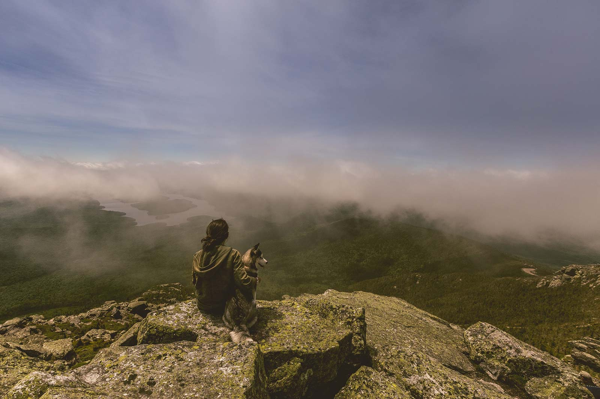

Home
Home (simple)
Home (Gallery)
Featured
Gallery
Gallery (Tabs)
Gallery (categories)
Photographers
About
Blog
Contact
An inspiring
collection of photos
Taken by 3 great photographers from Amsterdam, The Netherlands.
Discover featured photos
Meet photographers
Photo by
Peter Young
A selection of weekly featured photos
Enjoy this amazing selection of our
weekly favorites.
Young girl listening to music
Mysterious man looking over a lake
Asian woman reading a book

A man with his best friend
View full gallery
Meet photographers